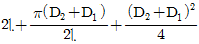
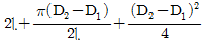
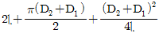
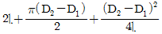
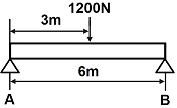
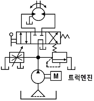
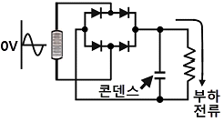
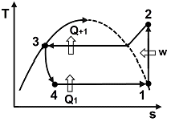
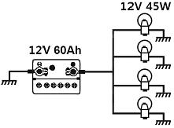

자동차정비기사 (2014-05-25 기출문제)
1과목: 일반기계공학
1. 두랄루민(duralumin)에 관한 설명으로 옳지 않은 것은?
- AI-Cu-Mg-Mn 합금으로 항공기, 자동차 등의 재료로 널리 사용된다.
- 알루미늄 합금 중에서도 열처리에 의하여 재질 개선이 가능한 합금이다.
- AI-Si-Ni-Mg 합금으로 고온강도가 커서 내연기관의 피스톤 재료로 주로 사용된다.
- 담금질 시효경화 처리에 의하여 기계적 성질을 개선하여 강도가 크고 성형성이 좋다.
(정답률: 65%)

2. 평벨트 전동장치에서 작은 풀리의 지름을 D1, 큰 폴리의 지름을 D2, 축간거리를 ɭ이라고 할 때, 엇걸기의 경우 벨트길이를 구하는 식으로 옳은 것은?




(정답률: 41%)
3. 유압장치에 관한 특징을 설명한 것으로 옳지 않은 것은?
- 무단변속과 원격제어가 가능하다.
- 전기회로에 비해 구성작업이 용이하다.
- 출력 및 토크제어를 자동화할 수 있다.
- 과부하방지, 인터록 또는 시퀀스 제어가 가능하다.
(정답률: 41%)
4. 2장의 용접용 모재 중 한쪽 또는 양쪽에 작은 돌기를 만들어 그 돌기부에 용접전류를 집중시켜 압력을 가하여 접합시키는 용접방법은?
- 심 용접
- 맞대기 용접
- 점 융접
- 프로젝션 용접
(정답률: 60%)
5. 기계재료의 시험방법을 정적시험과 동적시험으로 구분할 때, 다음 중 동적시험에 해당되는 것은?
- 인장시험
- 압축시험
- 피로시험
- 전단시험
(정답률: 54%)
6. 그림과 같이 너비 16㎝, 높이 24㎝의 직사각형 단면을 가진 경간 6m의 단순보 중앙에 1200N의 하중이 작용할 때 최대굽힘응력은 약 몇 MPa인가?

- 0.117
- 1.17
- 11.7
- 117
(정답률: 35%)
7. 다음 중 가장 큰 회전력을 전달시킬 수 있는 키는?
- 납작키(Flat key)
- 둥근키(Round key)
- 안장키(Saddle key)
- 접선키(Tangential key)
(정답률: 60%)
8. 축에 관한 설명으로 옳은 것은?
- 차축은 주로 비틀림 모멘트를 받는다.
- 전동축은 주로 굽힘 모멘트를 받는다.
- 축의 비틀림 각도는 비틀림 토크에 비례한다.
- 축의 비틀림 각도는 축의 길이에 반비례 한다.
(정답률: 37%)
9. 5㎜ 이상의 강판 리벳이음에서 코킹작업이 끝난 후 더욱 더 기밀을 완전하게 유지하기 위하여 강판을 공구로 때려서 밀착시키는 작업은?
- 시밍(seaming)
- 트리밍(trimming)
- 업세팅(upsetting)
- 플러링(fullering)
(정답률: 53%)
10. 센터리스 연삭기의 통과 이송방법은 조정숫돌에 의하여 가공물에 회전과 이송을 주는데, 기공물의 이송속도(㎜/min)를 바르게 표현한 것은? (단, d는 조정숫돌의 지름(㎜), n은 조정 숫돌의 회전수(rpm), α는 경사각이다.)
- πdn sinα
- πdn/1000 sinα
- πdn tanα
- πdn/1000 tanα
(정답률: 42%)
11. 내충격성과 성형성이 우수할 뿐만 아니라 색조와 표면광택 등의 외관 마무리성이 좋고 도장이 용이하기 때문에 자동차 외장 및 내장부품에 많이 사용되는 고분자 재료는?
- ABS
- PE
- PS
- PVC
(정답률: 64%)
12. 코일 스프링의 처짐량에 관한 설명으로 옳지 않은 것은?
- 스프링 권수에 비례한다.
- 스프링에 작용하는 하중에 비례한다.
- 스프링 소선 지름의 4승에 반비례한다.
- 스프링 소재 전단탄성계수의 2승에 반비례한다.
(정답률: 46%)
13. 지름이 20㎝의 관 속에 평균속도 20m/s의 물이 흐르고 있을 때 유량은 약 몇 m3/s인가?
- 0.628
- 6.28
- 62.8
- 628
(정답률: 45%)
14. 원형 단면축이 비틀림 모멘트를 받을 때, 축에 생기는 최대 전단응력에 관한 설명으로 옳지 않은 것은?
- 극단면계수에 정비례한다.
- 축의 지름이 증가하면 감소한다.
- 극단면 2차 모멘트에 반비례한다.
- 비틀림 모멘트가 증가하면 증가한다.
(정답률: 38%)
15. 가변용량펌프를 사용한 회로보다 설비비는 염가이나, 효율은 좋지 않은 그림에서 나타내는 회로는?

- 브레이크 회로
- 정토크 구동회로
- 정출력 구동회로
- 임의위치 로크회로
(정답률: 57%)
16. 측정할 때 생기는 오차 중 계통적오차의 원인이 아닌 것은?
- 개인오차
- 우연오차
- 환경오차
- 측정기 고유오차
(정답률: 62%)
17. 2개의 입구와 1개의 공통 출구를 가지고, 출구는 입구 압력의 작용에 의하여 한 쪽 방향에 자동적으로 접속 되는 밸브는?
- 변환밸브
- 스로틀밸브
- 셔틀밸브
- 연속변환밸브
(정답률: 58%)
18. 양 끝을 고정한 연강봉이 온도 22℃에서 가열되어 40℃가 되었다. 이때 재료 내부에 생기는 열응력은 약 얼마인가? (단, 재료의 선팽창계수는 1.2×10-5/℃, 탄성계수는 210GPa이다.)
- 45.4MPa
- 47.9MPa
- 50.4MPa
- 52.9MPa
(정답률: 37%)
19. 철강재료 중 수중에서 내식성이 가장 좋은 것은?
- 고장력강
- 공구용 특수강
- 스테인리스강
- 구조용 특수강
(정답률: 59%)
20. 탄성한도 내에서 인장하중을 받는 봉에 발생응력이 3배가 되면, 단위체적당 저장되는 에너지는 몇 배 증가하는가?
- 2배
- 4배
- 8배
- 9배
(정답률: 63%)
2과목: 기계열역학
21. 액체 상태 물 2kg을 30℃에서 80℃로 가열하였다. 이 과정 동안 물의 엔트로피 변화량을 구하면? (단, 액체 상태 물의 비열은 4.184kJ/kg K로 일정하다)
- 0.6391kJ/k
- 1.278kJ/k
- 4.100kJ/k
- 8.208kJ/k
(정답률: 44%)
22. 압력이 일정할 때 공기 5kg을 0℃에서 100℃까지 가열하는데 필요한 열량은 약 몇 kJ인가? (단, 공기비열 Cp(kJ/kg ℃)=1.01＋0.000079t(℃)이다.)
- 102
- 476
- 490
- 507
(정답률: 56%)
23. 10℃에서 160℃까지 공기의 평균 정적비열은 0.7315kJ/kg℃이다. 이 온도변화에서 공기 1kg의 내부에너지 변화는?
- 107.1kJ
- 109.7kJ
- 120.6kJ
- 121.7kJ
(정답률: 53%)
24. 피스톤이 끼워진 실린더 내에 들어있는 기체가 계로 있다. 이 계에 열이 전달되는 동안 “PV1·3=일정”하게 압력과 체적의 관계가 유지될 경우 기체의 최초압력 및 제적이 200kPa 및 0.04m3이였다면 체적이 0.1m3로 되었을 때 계가 한 일(kJ)은?
- 약 4.35
- 약 6.41
- 약 10.56
- 약 12.37
(정답률: 25%)
25. 시간당 380000kg의 물을 공급하여 수증기를 생산하는 보일러가 있다. 이 보일러에 공급하는 물의 엔탈피는 830kJ/kg이고, 생산되는 수증기의 엔탈피는 3230kJ/kg이라고 할 때, 발열량이 32000kJ/kg인 석탄을 시간당 34000kg씩 보일러에 공급한다면 이 보일러의 효율은 얼마인가?
- 22.6%
- 39.5%
- 72.3%
- 83.8%
(정답률: 38%)
26. 이상기체의 내부에너지 및 엔탈피는?
- 압력만의 함수이다.
- 체적만의 함수이다.
- 온도만의 함수이다.
- 온도 및 압력의 함수이다.
(정답률: 52%)
27. 아래 보기 중 가장 큰 에너지는?
- 100 kW 출력의 엔진이 10시간 동안 한 일
- 발열량 10000kJ/kg의 연료를 100kg 연소시켜 나오는 열량
- 대기압 하에서 10℃ 물 10m3를 90℃로 가열하는데 필요한 열량(물의 비율은 4.2kJ/kg ℃이다.)
- 시속 100km 로 주행하는 총 질량 2000kg인 자동차의 운동에너지
(정답률: 63%)
28. 이상적인 냉동사이클을 따르는 증기압축 냉동장치에서 증발기를 지나는 냉매의 물리적 변화로 옳은 것은?
- 압력이 증가한다.
- 엔트로피가 감소한다.
- 엔탈피가 증가한다.
- 비체적이 감소한다.
(정답률: 42%)
29. 완전히 단열된 실린더의 안의 공기가 피스톤을 밀어 외부로 일을 하였다. 이때 일의 양은? (단, 절대량을 기준으로 한다.)
- 공기의 내부에너지 차
- 공기의 엔탈피 차
- 공기의 엔트로피 차
- 단열되었으므로 일의 수행은 없다.
(정답률: 45%)
30. 과열과 과냉이 없는 증기 압축 냉동 사이클에서 응축온도가 일정할 때 증발온도가 높을수록 성능계수는?
- 증가한다.
- 감소한다.
- 증가할 수도 있고, 감소할 수도 있다.
- 증발온도는 성능계수와 관계없다.
(정답률: 38%)
31. 카르노 열기관의 열효율 (η)식으로 옳은 것은? (단, 공급열량은 Q1, 방열량은 Q2)
- η = 1－Q2/Q1
- η = 1＋Q2/Q1
- η = 1－Q1/Q2
- η = 1＋Q1/Q2
(정답률: 57%)
32. 열병합발전시스템에 대한 설명으로 옳은 것은?
- 증기 동력 시스템에서 전기와 함께 공정용 또는 난방용 스팀을 생산하는 시스템이다.
- 증기 동력 사이클 상부에 고온에서 작동하는 수은 동력 사이클을 결합한 시스템이다.
- 가스 터빈에서 방출되는 폐열을 증기 동력 사이클의 열원으로 사용하는 시스템이다.
- 한 단위 재열사이클과 여러 단의 재생사이클의 복합 시스템이다.
(정답률: 34%)
33. 실린더 내의 유체가 68kJ/kg의 일을 받고 주위에 36kJ/kg의 열을 방출하였다. 내부에너지의 변화는?
- 32kJ/kg 증가
- 32kJ/kg 감소
- 104kJ/kg 증가
- 104kJ/kg 감소
(정답률: 53%)
34. 일반적으로 증기압축식 냉동기에서 사용되지 않는 것은?
- 응축기
- 압축기
- 터빈
- 팽창밸브
(정답률: 53%)
35. 어떤 가솔린기관의 실린더 내경이 6.8㎝, 행정이 8㎝일 때 평균유효압력 1200 kPa이다. 이 기관의 1행정 당 출력(kJ)은?
- 0.04
- 0.14
- 0.35
- 0.44
(정답률: 23%)
36. 경로 함수(path function)인 것은?
- 엔탈피
- 열
- 압력
- 엔트로피
(정답률: 50%)
37. 27℃의 물 1kg과 87℃의 물 1kg이 열의 손실 없이 직접 혼합될 때 생기는 엔트로피의 차는 다음 중 어느 것에 가장 가까운가? (단, 물의 비열은 4.18kJ/kg K로 한다.)
- 0.035kJ/K
- 1.36kJ/K
- 4.22kJ/K
- 5.02kJ/K
(정답률: 19%)
38. 수은주에 의해 측정된 대기압이 753mmHg일 때 진공도 90%의 절대압력은? (단, 수은의 밀도는 13600kg/m3, 중력가속도는 9.8m/s2이다.)
- 약 200.08 kPa
- 약 190.08 kPa
- 약 100.04 kPa
- 약 10.04 kPa
(정답률: 37%)
39. 200 m의 높이로부터 250kg의 물체가 땅으로 떨어질 경우 일을 열량으로 환산하면 약 몇 kJ인가? (단, 중력가속도는 9.8m/s2이다.)
- 79
- 117
- 203
- 490
(정답률: 53%)
40. 이상기체의 비열에 대한 설명으로 옳은 것은?
- 정적비열과 정압비열의 절대값의 차이가 엔탈피이다.
- 비열비는 기체의 종류에 관계없이 일정하다.
- 정압비열은 정적비열보다 크다.
- 일반적으로 압력은 비열보다 온도의 변화에 민감하다.
(정답률: 54%)
3과목: 자동차기관
41. 전자제어 디젤엔진에서 사용되는 유닛 인젝터란?
- 타이머와 노즐을 일체화시킨 것
- 분사펌프와 노즐을 일체화시킨 것
- 분사펌프와 타이머를 일체화시킨 것
- 한 개의 노즐로 전체 실린더에 분사하는 것
(정답률: 68%)
42. 저항 판을 따라 회전할 때 변위에 대한 신호가 발생하는 센서는?
- 그랭크각 센서
- 수온 센서
- 페일러 센서
- 스로틀 포지션 센서
(정답률: 68%)
43. 가솔린 기관과 디젤 기관의 노크 방지방법이 바르게 짝지어진 것은?
- 가솔린 기관은 연소실 온도를 낮게, 디젤 기관은 연소실 온도를 높게 한다.
- 가솔린 기관은 착화지연기간을 짧게, 디젤 기관은 착화지연기간을 길게 한다.
- 가솔린 기관은 점화시기를 빠르게, 디젤 기관은 분사시기를 늦게 한다.
- 가솔린 기관은 초기 분사량을 적게, 디젤 기관은 초기 분사량을 많게 한다.
(정답률: 82%)
44. 출력이 735 kW인 디젤기관에서 연료소비율은 210kg/h이고 연료의 저위발열량은 42000kJ/kg일 때 기관의 제동열효율은?
- 25%
- 28%
- 30%
- 35%
(정답률: 52%)
45. 전자제어 가솔린 연료분사장치에서 연료분배파이프에 있는 연료압력 조절기는 무엇에 의해 연료압력을 조절하는가?
- 실린더 압축 압력
- 점화시기
- 기관의 온도
- 흡기다기관 진공
(정답률: 80%)
46. 일반적인 디젤엔진에서 회전력이 최대가 될 때는?
- 공회전(아이들 회전) 할 때 최대가 된다.
- 중속일 때 최대가 된다.
- 고속일 때 최대가 된다.
- 회전수와 관계가 없다.
(정답률: 84%)
47. 가솔린기관의 유해 배기가스 정화장치인 촉매컨버터에서 산화반응과 환원반응을 일으키는 대표적인 유해가스는?
- CO, HC, NOx
- SOx, N2, H2O
- H2O, H2S, O2
- SOx, H2SO4, NO4
(정답률: 86%)
48. LPG차량에서 공회전 시 엔진회전수의 안정성을 확보하기 위해 혼합된 연료를 믹서의 스로틀 바이패스 통로를 통하여 추가로 보상하는 장치는?
- 대시포트
- 스로틀 위치 센서
- 공전속도 조절 밸브
- 피드백 슬레노이드 밸브
(정답률: 72%)
49. 행정체적 300cm3, 연소실체적 45cm3인 기관에서 온도 100℃ 의 공기를 흡입하여 압축말에 450℃로 상승하였다면 압축말 실린더 내의 계기압력은? (단, 충진율은 100%이고, 가스는 이상기체로 간주한다.)
- 약 65.8 bar
- 약 14.9 bar
- 약 13.9 bar
- 약 66.8 bar
(정답률: 47%)
50. 피스톤 링에 크롬도금을 했을 때의 장점으로 틀린 것은?
- 내부식성이 낮다.
- 마찰계수가 적다.
- 열전도성이 좋다.
- 용융점이 높다.
(정답률: 57%)
51. 전자제어 가솔린기관의 연료펌프 결함 시 예상되는 현상으로 틀린 것은?
- 엔진시동이 불량하다.
- 연료펌프의 구동 소음이 커진다.
- 주행 시 울컥거리거나 가속성능이 떨어진다.
- ECU의 페일세이프 제어기능이 작동한다.
(정답률: 85%)
52. 전자제어 가솔린 기관에서 연료분사정지(fuel-cut)의 목적으로 틀린 것은?
- 고온 시동성 향상
- 촉매의 과열 방지
- 배출가스 정화
- 고속 회전 시 엔진 파손방지
(정답률: 69%)
53. 가솔린 직접분사엔진(Gasoline Direct Injection)에 관한 설명으로 틀린 것은?
- 연료를 각각의 실린더에 직접 분사한다.
- 초희박 혼합기의 공급 및 연소가 가능하다.
- 연료를 각각의 흡입구 포트에 분사한다.
- 고압축 비를 유지할 수 있고 응답성이 우수하다.
(정답률: 61%)
54. 윤활유의 요구 특성이 아닌 것은?
- 점도지수(Viscosity index)가 낮을 것
- 인화점(Flash Point)이 높을 것
- 유동점(Pour Point)이 낮을 것
- 유성(Oiliness)이 높을 것
(정답률: 67%)
55. 로터리 기관의 특징을 왕복형 기관과 비교할 때 틀린 것은?
- 진동이나 소음이 적다.
- 구조가 복잡하고 부품수가 많다.
- 고속 회전 시 출력이 저하되는 일이 적다.
- 출력이 같은 왕복형 기관에 비하여 소형이고 가볍다.
(정답률: 53%)
56. 전자제어 기관에서 흡입공기량을 계측하는 센서의 검출방법으로 틀린 것은?
- 맵센서 방식은 흡입공기량을 유속 유량으로 검출한다.
- 에어플로 미터식은 흡입공기량을 체적 유량으로 검출한다.
- 칼만 와류식은 흡입공기량을 체적 유량으로 검출한다.
- 핫 필름식은 흡입공기량을 질량 유량으로 검출한다.
(정답률: 77%)
57. 디젤기관에서 연소에 영향을 미치는 요소로 틀린 것은?
- 옥탄가
- 압축비
- 회전속도
- 흡기온도
(정답률: 82%)
58. 기관의 흡입장치에서 흡입효율을 향상시키기 위해 설계 시 응용하는 동적효과가 아닌 것은?
- 간섭효과
- 관성효과
- 맥동효과
- 공명효과
(정답률: 70%)
59. 크랭크 각 센서의 간헐적 고장 시 나타나는 현상으로 틀린 것은?
- 연료소모가 많아진다.
- 가속성능이 저하된다.
- 공연비 제어가 불량해 진다.
- 연료압력이 높아진다.
(정답률: 67%)
60. 연료탱크의 연료잔량 경고등 센서에 사용되는 소자는?
- 가변저항
- 서미스터
- 피에조센서
- 사이리스터
(정답률: 90%)
4과목: 자동차새시
61. 급제동시 차륜의 하중 변화로 인하여 발생되는 뒷바퀴조기 잠김 현상을 뒷바퀴의 압력을 감소시켜 방지하기 위한 것으로 맞는 것은?
- 프로포셔닝 밸브
- 체크 밸브
- 마스터 실린더
- 하이드로 백
(정답률: 74%)
62. 자동차 주행 중 새시계통에서 이상 진동의 원인으로 거리가 먼 것은?
- 불균형으로 따른 구동 계통의 회전
- 불균일한 타이어의 회전
- 기관의 정상연소에 의해 발생하는 일정한 폭발압력
- 노면의 요철 변화에 따른 불균형
(정답률: 77%)
63. 자동변속기에서 관성력을 이용하여 수동변속기 차량의 플라이휠과 같은 역할을 하는 것은?
- 토크컨버터
- 유성기어장치
- 클러치 디스크
- 스테이터
(정답률: 69%)
64. 수동변속기 차량에서 클러치 스프링의 장력을 결정하는 요인으로 거리가 먼 것은?
- 전달 회전토크
- 마찰계수
- 클러치판의 평균반경
- 스프링의 전단응력
(정답률: 48%)
65. 휠 림(rim)의 종류가 아닌 것은?
- 2분할 림
- 광폭심저 림
- 광폭평저 림
- 비트이음 림
(정답률: 64%)
66. 4륜 조항장치(4WS)의 제어와 관련된 내용으로 적합한 것은?
- 항상 조향력을 일정하게 제어한다.
- 고속 선회 시 후륜도 전륜과 같은 방향으로 조형된다.
- 고속 직진 시에는 오히려 불리하다.
- 저속 회전 시 후륜은 전륜과 같은 방향으로 조향된다.
(정답률: 59%)
67. 제동장치에서 유압라인 내에 잔압을 두는 이유는?
- 급제동시 노스다운과 앤티 다이브를 방지하기 위해
- 브레이크 작동 늦음과 베이퍼록을 방지하기 위해
- 제동력을 증가시키기 위해
- 뒷바퀴의 로크를 방지하기 위해
(정답률: 72%)
68. 전륜구동 방식의 차량에서 흔히 나타날 수 있는 토크스티어 현상이란?
- 급제동 시 처음에는 조향각도가 증가하다가 감소되는 현상
- 주행속도가 증가함에 따라 조향각도가 증가되는 현상
- 주행속도가 증가함에 따라 조향각도가 감소되는 현상
- 급출발 시 드라이브 샤프트가 긴 쪽으로 핸들이 돌아가려는 현상
(정답률: 73%)
69. 주행 중 제동 시 차량에 나타나는 일반적인 현상은?
- 제동으로 인한 바퀴의 잠김 현상은 앞ㆍ뒤 동시에 일어난다.
- 급제동 시 앞바퀴보다 뒷바퀴의 제동력이 더 크게 걸린다.
- 제동으로 인해 정지하면 차량의 운동에너지는 모두 열에너지로 소모된다.
- 제동 전·후의 역학적 에너지 보존이 성립된다.
(정답률: 55%)
70. 전자제어 제동장치에서 전자적으로 프로포셔닝 밸브 역할을 하는 장치는?
- ECS(electronic control system)
- TCS(traction control system)
- EBD(electronic brake force distribution)
- EPS(electronic power steering system)
(정답률: 66%)
71. 공기식 전자제어 현가장치에서 자세제어의 종류가 아닌 것은?
- 앤티 스쿼트
- 앤티 다이브
- 앤티 롤
- 앤티 요잉
(정답률: 60%)
72. 차량에 작용하는 공기력과 관련된 내용은?
- 항력은 고속 주행 시 저항을 줄여서 연비 향상을 도모한다.
- 횡력은 주행 중 바람이 옆 방향으로 불 때 발생하나 주행방향 안정성에는 영향을 주지 않는다.
- 양력은 고속 주행 시 차체 들림 현상을 발생시켜 조항 안정성을 나쁘게 한다.
- 리어 스포일러를 장착하여 항력과 양력을 줄일 수 없다.
(정답률: 56%)
73. 자동변속기 차량에서 스톨 점(stall point)에 대한 설명으로 거리가 먼 것은?
- 토크컨버터의 터빈과 펌프의 회전비가 최저(zero)인 점이다.
- 토크컨버터의 터빈과 펌프의 동력 전달효율이 최대인 점이다.
- 토크컨버터의 터빈과 펌프의 토크 변화비율이 최대인 점이다.
- 강한 제동이 걸린 상태의 스톨점에서는 차량의 구동력은 0이다.
(정답률: 39%)
74. 타이어 마모량의 측정방법에 대한 설명 중 틀린 것은?
- 측정은 공차상태로 하고 타이어의 공기압은 표준공기압으로 한다.
- 접지부 임의의 한 점에서 120도 지점이다. 1/4, 3/4지점 주위의 요철무늬의 깊이를 측정한다.
- 요철무늬의 깊이 측정값은 타이어 4개 측정값을 평균으로 한다.
- 요철형의 무늬 깊이를 측정할 때의 타이어 공기압은 표준공기압으로 한다.
(정답률: 58%)
75. 단순 유성기어장치에서 선기어를 고정하고, 유성기어 캐리어를 구동하면 링기어는?
- 감속된다.
- 종속된다.
- 역회전된다.
- 역회전 감속된다.
(정답률: 52%)
76. 스프링 정수가 3kgf/㎜인 코일 스프링을 15㎜로 압축하려면 필요한 힘은?
- 25kgf
- 35kgf
- 45kgf
- 55kgf
(정답률: 57%)
77. 전자제어 제동장치에서 고장으로 발생되어도 EBD 장치는 정상으로 작동되는 조건은?
- 컴퓨터의 고장
- 모터 펌프의 고장
- HCU 내 후륜 솔레노이드 밸브고장
- 휠 스피드센서 2개 이상 고장
(정답률: 43%)
78. 자동변속기의 토크 컨버터에서 스테이터에 구성된 일방향 클러치가 고착되었을 때 나타나는 현상?
- 정지 후 출발이 곤란하다.
- 저속에서 가속이 어렵다.
- 고속 주행이 어렵다.
- 스톨 회전수가 낮아진다.
(정답률: 50%)
79. 전자제어 구동력 조절장치(TCS)에서 제어 방식의 종류로 틀린 것은?
- 엔진 토크 제어방식
- 브레이크 제어방식
- 차동장치 제어방식
- 컨버터 제어방식
(정답률: 61%)
80. 조향핸들을 1회전 했을 때 피트먼 암이 30° 움직였다면 조향 기어비는?
- 10 : 1
- 11 : 1
- 12 : 1
- 13 : 1
(정답률: 68%)
5과목: 자동차전기
81. 가솔린 엔지의 회전수가 3000rpm, 최대 폭발압력이 될 때까지의 신간이 3ms가 소요된다면 ATDC 10°에서 최대 푹발압력이 되기 위한 점화 시기는?
- 압축행정 BTDC 15°
- 압축행정 BTDC 25°
- 압축행정 BTDC 44°
- 압축행정 BTDC 54°
(정답률: 49%)
82. 하이브리드 전기자동차에서 자동차의 전구 및 각종 전기 장치의 구동 전기 에너지를 공급하는 기능을 하는 것은?
- 보조 배터리
- 변속기 제어기
- 모터 제어기
- 엔진 제어기
(정답률: 62%)
83. 자동차의 각종 전기장치 중 전기적 에너지를 열로 바꾸어 이용하는 것은?
- 서미스터
- 시가라이터
- 기동전동기
- 솔레노이드
(정답률: 78%)
84. 전기회로의 접촉저항을 줄이는 방법으로 틀린 것은?
- 접촉 단자를 도금한다.
- 접촉 압력을 증가시킨다.
- 접촉 면적을 감소시킨다.
- 접촉면과 주위를 청결하게 한다.
(정답률: 61%)
85. 자동차용 납산 축전지의 커넥터와 단자기둥에 관한 설명 중 틀린 것은?
- 커넥터와 단자기둥은 납 합금으로 되어 있다.
- 양극은 지름이 굵고, 음극은 가늘다.
- 양극은 P(＋), 음극은 N(－)의 문자로 표기하기도 한다.
- 극판의 수가 많을 쪽 단자기둥이 양극이다.
(정답률: 57%)
86. 좌·우 방향 지시등의 점멸회수가 다를 때의 원인으로 틀린 것은?
- 전구 용량의 상이
- 축전지 전압 저하
- 좌·우 전구 중 어느 하나의 접지 불량
- 앞·뒤 전구 중 하나가 단선
(정답률: 63%)
87. 그림과 같은 콘덴서 평활회로에서 콘덴서는 부하에 흐르는 전류의 파형을 ( )에 가깝게 만들어 주는 역할을 한다. ( )에 들어갈 말은?

- 교류
- 직류
- 증폭전류
- 유도전류
(정답률: 55%)
88. 아날로그 회로시험기 사용법으로 옳은 것은?
- 측정 리드 봉을 접속한 상태에서 셀렉터 전환을 한다.
- 콘덴서 양부 확인은 저항 및 DC전압 레인지에서 확인 할 수 있다.
- 전압 측정 시 리드 봉 두 개를 단락시키고 영점 조정한다.
- 띠(색) 저항 측정 시 흑(－), 적(＋)색 리드 봉의 방향에 주의한다.
(정답률: 35%)
89. 자동차 전기장치에서 배터리의 설명으로 틀린 것은?
- 엔진 시동 시 기동 전동기와 점화계통에 충분한 전기에너지를 공급한다.
- 발전기 출력이 부족하면 각종 전기 장치는 전기적 에너지를 배터리로부터 공급받는다.
- 주행상태에 따른 발전기 출력과 전기적 부하 상태의 불평형을 조정한다.
- 모든 전기장치에 대하여 전류 안전장치 기능을 갖는다.
(정답률: 53%)
90. 차량위치 검출 방법 중 GPS(global positioning system)방식의 단점으로 틀린 것은?
- 터널이나 빌딩사이 등 위성이 보이지 않은 곳(전파 미도달지역)에서는 측위가 불가능
- 민간 이용의 측위 정도에는 공칭 30~100m의 오차발생
- 기하학적 계산 원리로 수신기에서 본 위성의 배치에 딸 측위 상태에 큰 오차 발생
- 주파수 채널의 한계로 인한 이용자 수 제한
(정답률: 71%)
91. 노킹센서에 대한 설명으로 틀린 것은?
- 엔진 헤드의 측면에 장착하여 노킹 영역을 검출한다.
- 엔진의 노킹 상태를 검출하여 점화시기를 제어한다.
- 피에조 압전 현상을 이용하여 노킹상태를 검출한다.
- 노킹센터의 종류에는 공진형과 비공진형이 있다.
(정답률: 57%)
92. 교류 발전기에 대한 설명으로 옳은 것은?
- 차량에 장착된 배터리의 급속 충전 시 발전기와 무관하다.
- 기관이 작동되고 있는 상태에서 출력단자를 단락하여 불꽃에 의한 발생 전압을 점검한다.
- B단자에는 배터리 전압이 항상 걸려있으므로 차체와의 쇼트에 주의한다.
- 출력전압은 스테이터 코일의 자력크기에 의해 결정된다.
(정답률: 55%)
93. 냉방장차에서 냉매의 상태면화(T－s선도)에서 각 과정별 설명으로 틀린 것은?

- 1 → 2 : 압축기의 압축과정
- 2 → 3 : 응축기의 응축과정
- 3 → 4 : 건조기의 팽창과정
- 4 → 1 : 증발기의 증발과정
(정답률: 58%)
94. 내부에 불활성 가스가 들어있으며 사용에 따른 광도변화가 거의 없고 대기 조건에 따라 반사경이 흐려지지 않은 전조등의 형식은?
- 세미실드 빔식
- 실드 빔식
- 하이 빔식
- 로 빔식
(정답률: 69%)
95. 12V-60Ah의 축전지에 12V용 45W의 전구 4개를 그림과 같이 연결하였을 때 배터리에서 출력되는 전류는?

- 15A
- 20A
- 25A
- 3.75A
(정답률: 40%)
96. 주행거리가 짧은 전기자동차의 단점을 보안하기 위하여 만든 자동차로 전기자동차의 주동력인 전기배터리에 보조 동역장치를 조합하여 만든 자동차는?
- 하이브리드 자동차
- 태양광 자동차
- 천연가스 자동차
- 전기 자동차
(정답률: 73%)
97. 전자제어 점화장치에서 컨트롤 유닛(ECU)의 점화시기 제어와 관련된 내용으로 옳은 것은?
- 냉각수 온도가 낮을 때는 진각 보정한다.
- 대기 압력이 높을 때는 진각 보정한다.
- 흡기온도에 상관없이 항상 일정하게 고정된다.
- 노킹센서의 신호가 들어오면 진각 보정한다.
(정답률: 34%)
98. 냉방장치에서 냉매 속에 있는 수분과 이물질을 제거하며 냉매를 저장하고 액체 상태의 냉매를 팽창밸브로 공급해주는 것은?
- 증발기(evaporator)
- 압축기(compressor)
- 응축기(condenser)
- 건조기(receiver drier)
(정답률: 48%)
99. 점화플러그의 표시가 BP 6ES-11이라고 표시되어 있을 때 6의 의미는?
- 나사부 지름
- 열가
- 플러그 간극
- 나사부 길이
(정답률: 70%)
100. 가솔린 기관의 압축압력을 시험하기 위한 기관의 회전수로 적합한 것은?
- 약 120~240rpm
- 약 450~550rpm
- 약 700~800rpm
- 약 2000rpm
(정답률: 40%)